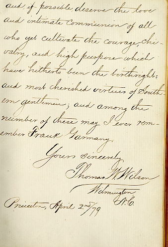

Woodrow Wilson's Inscription

This autographed inscription by Thomas W. (Woodrow) Wilson '1879 was written to Frances C. Garmany '1879. Click on the above inscription to return to the first page.
[MUDD LIBRARY HOME PAGE]
[AUTOGRAPH BOOK FINDING AID]